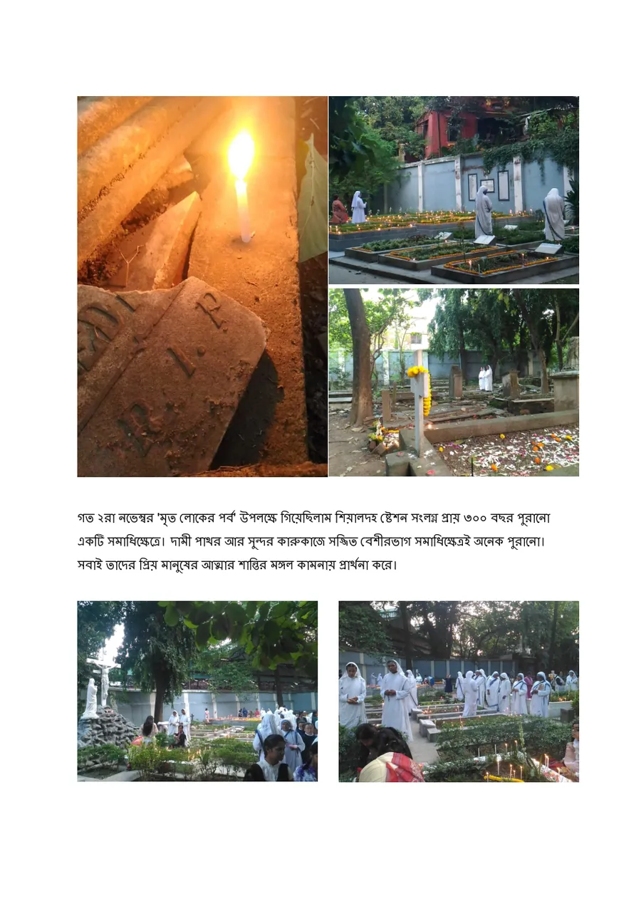

MA · photo-essay · Bangla
মৃত্যুঞ্জয়ী হৃদয় · The Deathless Heart
A 300-year-old cemetery in Kolkata on All Souls' Day: every grave a love story.
মৃত্যুঞ্জয়ী ভালবাসা এমন ভালবাসা যা কখনও শেষ হয় না।A deathless love is a love that never ends.